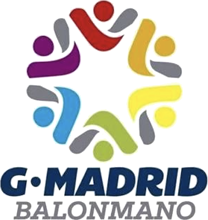

G·MADRID
BALONMANO
EL CENTRAL MARCA QUIÉN INICIA
EL CENTRAL MARCA QUIÉN INICIA
LONG
CHICKEN
◀ INICIA EL
LATERAL IZQ.
↔ AHORA EN ESPEJO
Desplazamiento
Pase / tiro
Balón
LONG CHICKEN
EL CENTRAL MARCA QUIÉN INICIA